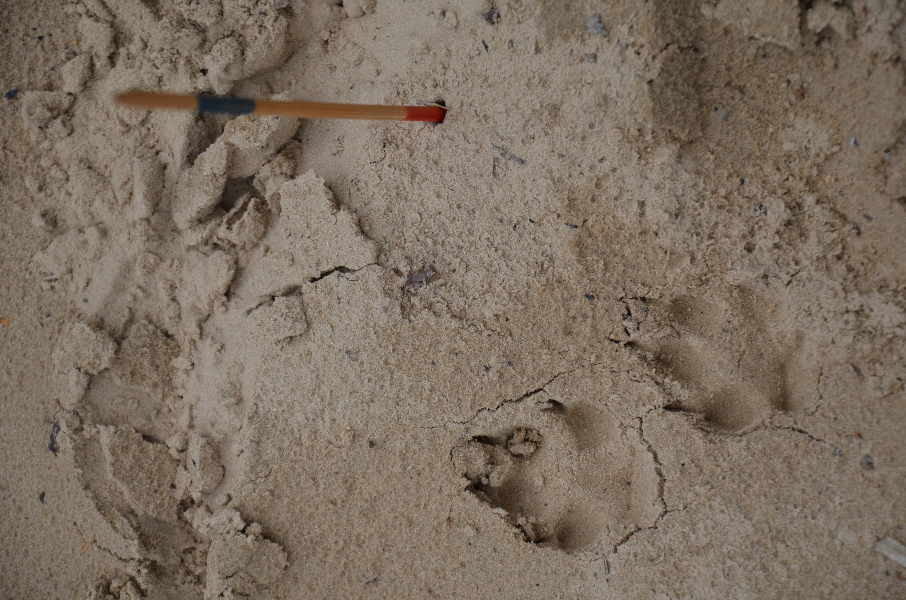
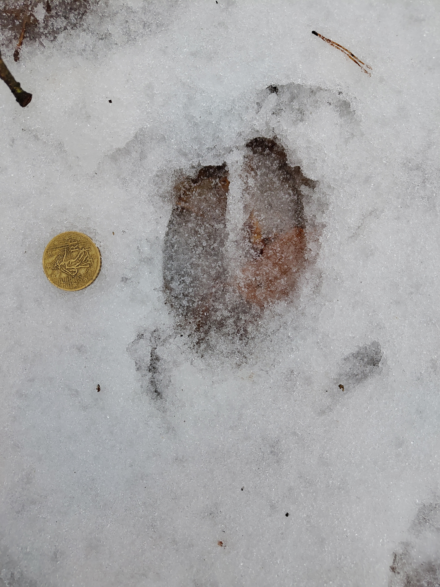
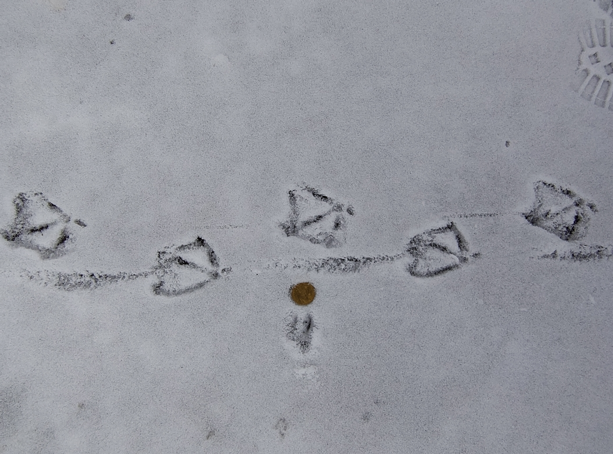

Fährtenlesen
“Wer die Wildnis betritt, entdeckt nicht nur die Natur, sondern auch sich selbst.” – Tamarack Song

Fährten lesen und verstehen
“Die Kunst vom Weg abzukommen” Baptiste Morizot

Der Natur auf der Spur …
Wer Fährten liest, erfährt Geschichten – die Spuren und Zeichen der Wildtiere geben uns einen Einblick in ihr Leben. In meiner Arbeit geht es darum, für andere Menschen diese Geschichten sichtbar zu machen und die eigene Wahrnehmung zu schärfen.
